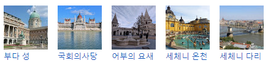

관광명소 :

언어: 헝가리어
기후: 기후는 전반적으로 대륙성 기후에 속하여 비교적 온화하고 사계절도 있다. 중부유럽의 해양성 기후와 러시아 남부의 스텝기후와의 접점(接點)에 있다. 위도가 비교적 높고, 겨울은 춥지만 지중해로부터 해양성기후의 영향을 받아, 겨울에도 습윤하고 흐린 경향이 있다. 최저 기온인 1월은 평균 영하 1℃ 이며 심한 경우 영하 20℃까지 내려가는 경우가 있으며, 최고인 7월은 22℃이다. 연간 평균 기온은 10℃ 전후이다. 연강수량은 500∼700mm로 서부에 약간 많고, 활엽수가 무성한데, 동부에는 초지가 많다.[5]
면적: 93,030km²
인구: 9,684,652명
수도: 부다페스트
정치체제: 공화정, 단일국가, 의원 내각제
화폐단위: 포린트
환율: 1000KRW = 약 241FT